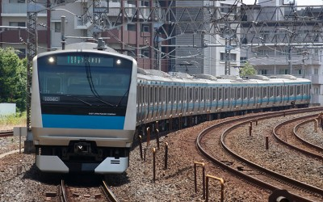
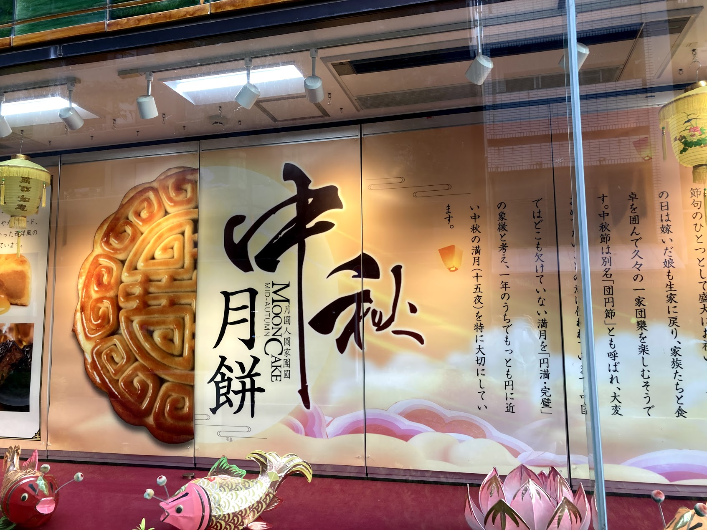
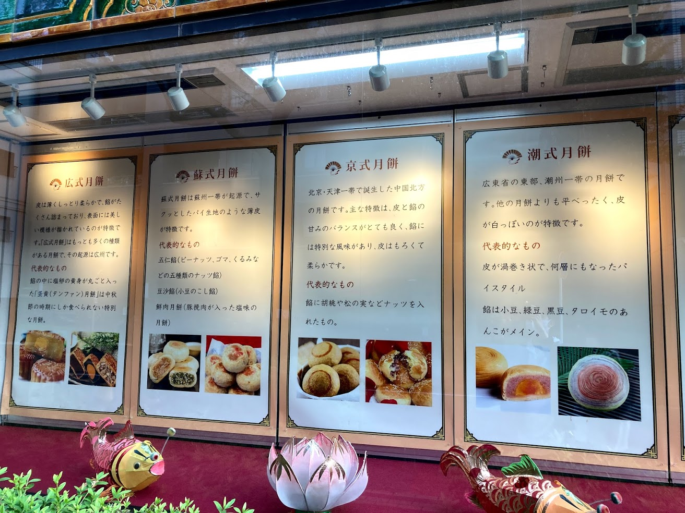
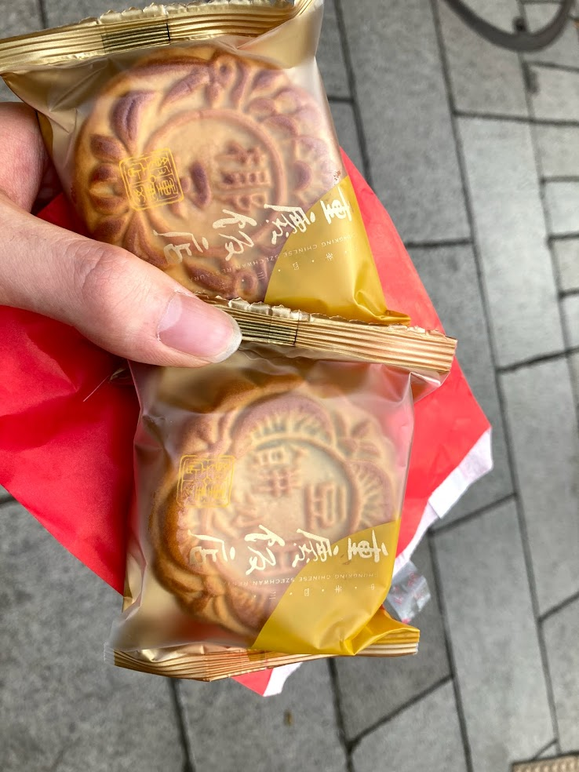

中華街散歩
～横浜：元町・中華街～
10/13 2020
カテゴリー：サークル長の自主練
 横浜市 中華街（JR石川町駅側より）
横浜市 中華街（JR石川町駅側より）
昨今の新型コロナウイルス感染症により、依然として本サークルは活動は制限されていますので、個人的に散歩をしてきました。その時巡ったところや名所をご紹介できればなと思います。
さて、本日は大学の課題で中華料理の食レポをするとあったので、横浜にあります「横浜中華街」に来ております。もしかしたら池袋のチャイナタウンの方がよかったのかもしれません…
JR京浜東北・根岸線
横浜中華街に行く手段としてみなとみらい線を使うのが一般的です。しかし私は根っからのJR信者、JR京浜東北・根岸線の石川町（元町・中華街）駅から歩いていきました。
駅から歩いていくと、教養ゼミⅡ（中国の食文化）〈月曜３限・担当教員：岩田和子 先生〉でやった『月餅』の看板を発見！授業で月餅について学習したので、どんなものかある程度理解していましたが、こちらの看板で再度月餅について学習したいと思います！
月餅
こちらの月餅は『重慶飯店 横浜中華街 第一売店』で購入しました！
とても美味しかったです。皆さんも異文化を楽しむこともやってみてください～♬